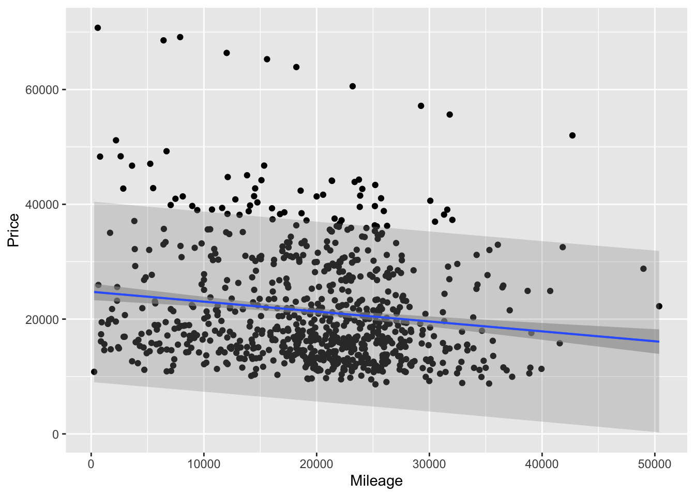

| term | estimate | std.error | statistic | p.value |
|---|---|---|---|---|
| (Intercept) | 11.321 | 6.123 | 1.849 | 0.074 |
| education | 2.651 | 0.370 | 7.173 | <0.001 |
Inference for Prediction in SLR
Warm-up questions
Is education level associated with income? Researchers collected education level (in years) and income (in thousands of dollars) for a random sample of 32 employees working for the city of Riverview.
The researchers fit a simple linear regression of income on education and obtained the following output:
Q1. Write the fitted regression equation.
Solution
\(\widehat{y} = 11.3 + 2.65x\)
Q2. Interpret the slope coefficient in the context of the problem. (Don’t forget to specify units.)
Solution
For a one-year increase in education level we expect average income to increase by $2,650.
Q3. Interpret the intercept in the context of the problem. (Don’t forget to specify units.)
Solution
For an employee with 0 years of education, we expect their average income to be $11,300. (Note: This interpretation may not make sense in context since it’s unlikely that an employee would have 0 years of education.)
A new researcher joined the team and decided that education should be standardized (to have mean 0 and SD 1) before fitting the regression model. The output from this regression is shown below:
| term | estimate | std.error | statistic | p.value |
|---|---|---|---|---|
| (Intercept) | 53.742 | 1.587 | 33.861 | <0.001 |
| scale(education) | 11.567 | 1.613 | 7.173 | <0.001 |
Q4. Write the fitted regression equation for this new model.
Solution
\(\widehat{y} = 53.7 + 11.6x\)
Q5. Interpret the slope coefficient in the context of the problem. (Don’t forget to specify units.)
Solution
For a one standard deviation increase in education level we expect average income to increase by $11,600.
Q6. Interpret the intercept in the context of the problem. (Don’t forget to specify units.)
Solution
An employee with average education level (since the standardized value is 0) is expected to have an income of $53,700.
Q7. Compare the two models. What’s the same? What’s different?
Solution
The two models have different regression coefficients and standard errors, but they have the same overall association between the explanatory and predictor variable.
Prediction and confidence intervals
Tip
The R code for the following questions is found at
https://aloy.github.io/stat230-materials/activity/04-slr-prediction.
The URL is also posted on Moodle.
For this activity you will consider predicting the price of a used car (it’s Kelly Blue Book value) based on its mileage. The columns of interest in the Cars data set are Price and Mileage.
Q1. Use the lm() command to fit the simple linear regression model where Mileage is used to predict Price. Report the fitted regression equation.
Solution
cars <- read.csv("https://aloy.github.io/stat230-materials/data/Cars.csv")
car_mod <- lm(Price ~ Mileage, data = cars)
car_mod
Call:
lm(formula = Price ~ Mileage, data = cars)
Coefficients:
(Intercept) Mileage
24764.5590 -0.1725 \(\widehat{y} = 24764.56 - 0.17x\)
Q2. The first car in the data set is a Buick Century with 8221 miles. Calculate the expected price of this car using the fitted regression equation.
Solution
Using the regression equation, we have: \[\widehat{y} = 24764.56 - 0.17(8221) = 23366.99\] So, the expected price of this car is $23,366.99.
In R, we use predict() to find the expected price:
predict(car_mod, newdata = data.frame(Mileage = 8221)) 1
23346.27 The slight difference here is due to rounding in the coefficients for the “by hand” calculation.
Q3. If we want to predict the price of this car, should we use a confidence interval or a prediction interval?
Solution
We should use a prediction interval because we are predicting the price of an individual car, not the average price of cars with that mileage.
Q4. Use R to construct the appropriate 89% interval for the price of this car. Record this interval below.
Solution
predict(car_mod, newdata = data.frame(Mileage = 8221),
interval = "prediction", level = 0.89) fit lwr upr
1 23346.27 7654.458 39038.08Q5. Interpret the interval in context.
Solution
We are 89% confident that the price of a Buick Century with 8221 miles is between $7,654.46 and $39,038.08.
Q6. Run the code to produce a scatterplot, regression line, and both types of intervals. Which is the prediction interval and which is the confidence interval? How can you tell?

Solution
The wider interval is the prediction interval, and the narrower interval is the confidence interval. This is because prediction intervals account for both the uncertainty in estimating the mean response and the variability of individual responses around that mean, while confidence intervals only account for the uncertainty in estimating the mean response.